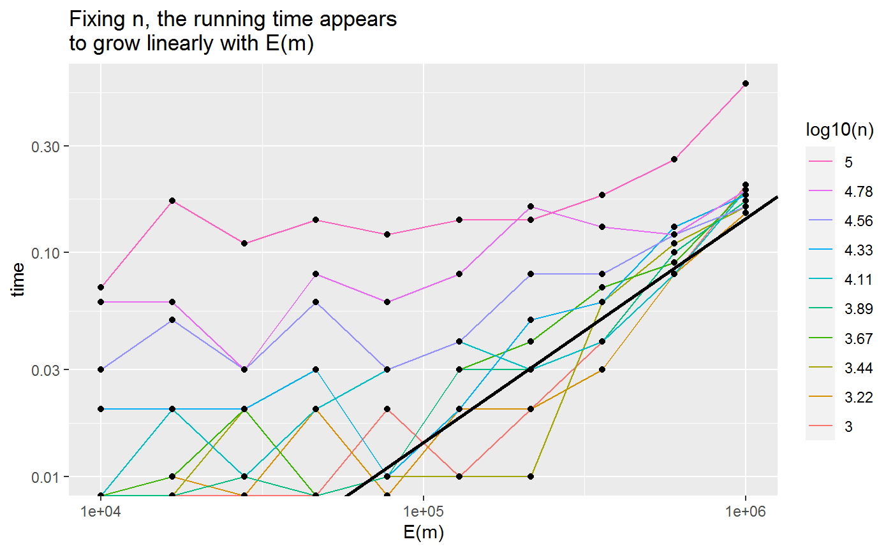
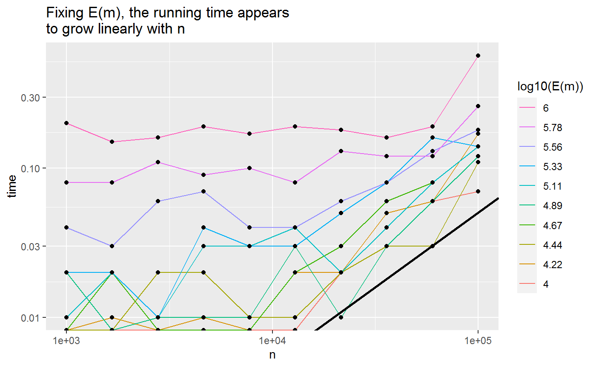

WARNING: this code has not yet been cleaned up it. It repeats the computational experiment from Section 4.1 of the paper on a slightly smaller scale.
library(fastRG)
#> Loading required package: Matrix
library(dplyr)
#>
#> Attaching package: 'dplyr'
#> The following objects are masked from 'package:stats':
#>
#> filter, lag
#> The following objects are masked from 'package:base':
#>
#> intersect, setdiff, setequal, union
library(ggplot2)
logSeq <- function(from, to, len) {
# find a sequence from, ..., to of length len such that *on the log scale* the points are equidistant.
seq(log(from), log(to), len = len) %>%
exp() %>%
round()
}
nseq <- logSeq(1e3, 1e5, len = 10)
mseq <- logSeq(1e4, 1e6, len = 10)
K <- 5
runTimes <- matrix(NA, nrow = length(mseq) * length(nseq), ncol = 3) %>% as_tibble()
#> Warning: `as_tibble.matrix()` requires a matrix with column names or a `.name_repair` argument. Using compatibility `.name_repair`.
#> This warning is displayed once per session.
colnames(runTimes) <- c("n", "m", "time")
S <- matrix(runif(n = K * K), nrow = K)
ticker <- 1
for (ntick in length(nseq):1) {
n <- nseq[ntick]
X <- matrix(rpois(n = n * K, 1), nrow = n)
for (mtick in 1:length(mseq)) {
averageDegree <- mseq[mtick] / n
timer <- system.time({
el <- fastRG(X, S, avg_deg = averageDegree, return_edge_list = TRUE)
})
rm(el)
gc()
runTimes[ticker, ] <- rbind(n, mseq[mtick], timer[3])
ticker <- ticker + 1
}
}# runTimeFixN
runTimes %>%
mutate("log10(n)" = as.character(round(log10(n), 2)), "E(m)" = m) %>%
ggplot(aes(x = `E(m)`, y = time, group = `log10(n)`)) +
geom_line(aes(color = `log10(n)`)) +
guides(col = guide_legend(reverse = TRUE)) +
geom_point() +
scale_x_log10() + scale_y_log10() +
geom_abline(slope = 1, intercept = -6.85, size = 1) +
ggtitle("Fixing n, the running time appears\nto grow linearly with E(m)")
#> Warning: Transformation introduced infinite values in continuous y-axis
#> Warning: Transformation introduced infinite values in continuous y-axis
runTimes %>%
mutate("log10(E(m))" = as.character(round(log10(m), 2))) %>%
ggplot(aes(x = n, y = time, group = `log10(E(m))`)) +
geom_line(aes(color = `log10(E(m))`)) +
guides(col = guide_legend(reverse = TRUE)) +
geom_point() +
scale_x_log10() + scale_y_log10() +
geom_abline(slope = 1, intercept = -6.3, size = 1) +
ggtitle("Fixing E(m), the running time appears\nto grow linearly with n")
#> Warning: Transformation introduced infinite values in continuous y-axis
#> Warning: Transformation introduced infinite values in continuous y-axis